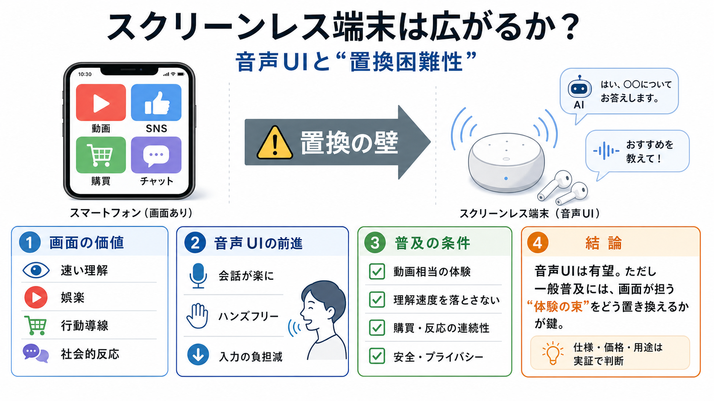

Apple sues OpenAI, alleging it stole trade secrets
[![Sebastian Herrera](https://fortune.com/img-assets/wp-content/uploads/2026/05/Sebastian_Herrera.jpg?format=webp&w=1440…

[![Sebastian Herrera](https://fortune.com/img-assets/wp-content/uploads/2026/05/Sebastian_Herrera.jpg?format=webp&w=1440…
Now he's reportedly working on a new, screen-less device for OpenAI. ITEM: OpenAI plans to release a mysterious device, …
Bloomberg the Company & Its Products The Company & its ProductsBloomberg Terminal Demo RequestBloomberg Anywhere Remote …
# The wildest allegations in Apple’s trade secrets lawsuit against OpenAI. Apple’s trade secret lawsuit against OpenAI i…
Apple accuses OpenAI of using stolen trade secrets to create its upcoming AI gadgets in new lawsuit. Apple sued OpenAI o…